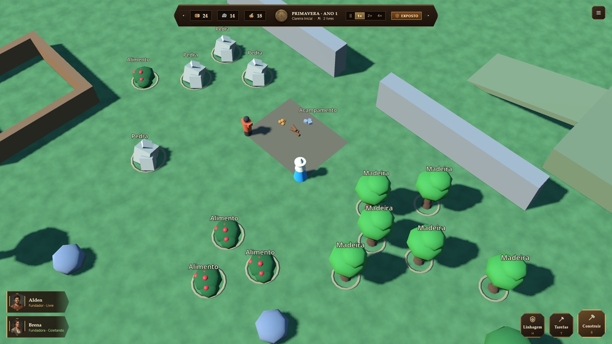
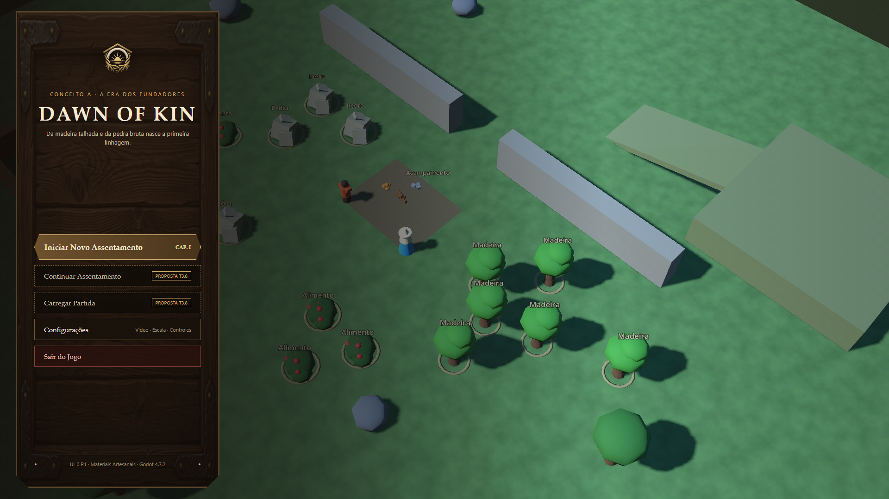
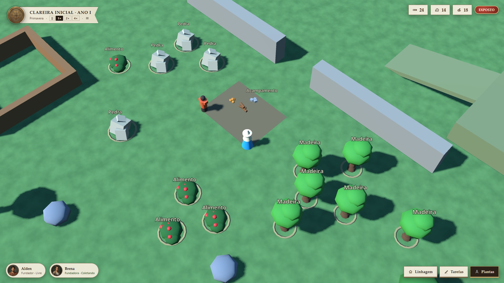
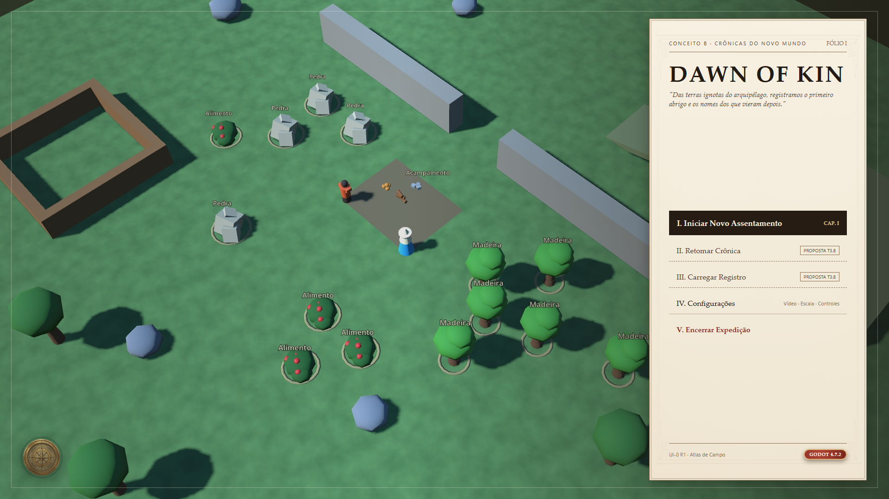
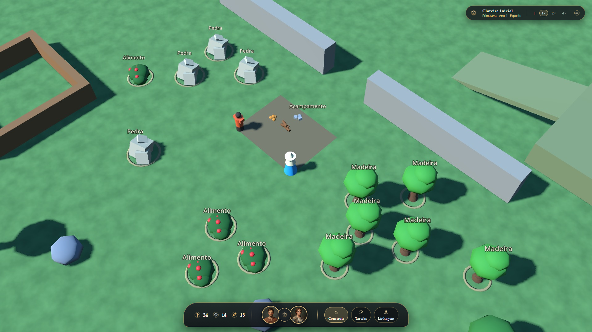
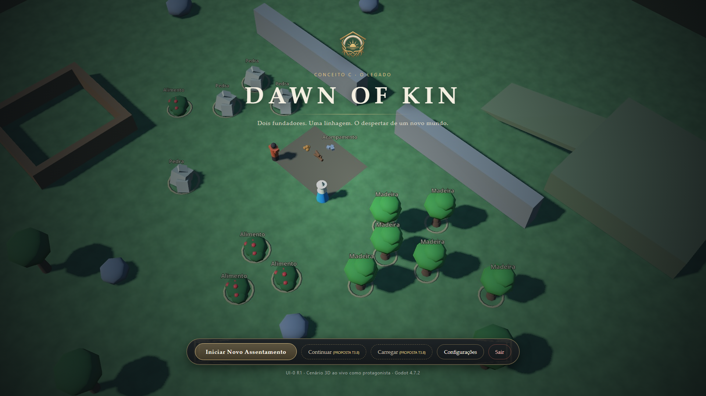

Conceito A — A Era dos Fundadores
Cedro talhado · Ferro forjado · Viga central no topo · Escudos verticais


Diferencial: Tátil e artesanal; comunica sobrevivência construída com as próprias mãos. Godot 4.7.2: +23 draw calls, 16,79 ms méd. (60 FPS).
Conceito B — Crônicas do Novo Mundo
Papel washi claro · Tinta nanquim · Bússola · Croquis arquitetônicos


Diferencial: Polaridade clara autoral (zero "dark dashboard"); perfeito para exploração do arquipélago e caderno de plantas. Godot 4.7.2: +18 draw calls, 16,60 ms méd.
Conceito C — O Legado
Ardósia polida · Cerâmica marfim · Fio dourado · Arco da Linhagem na base


Diferencial: Topo esquerdo 100% aberto; família fundadora unida no centro da base; menu cinematográfico. Godot 4.7.2: +16 draw calls (mais leve), 16,59 ms méd.